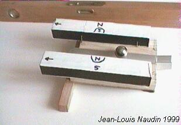
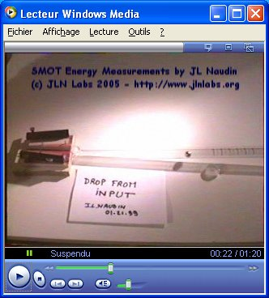
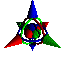

What is the SMOT
? This is a very simple Free
Energy demonstrator that anyone can
build easily.
The principle is very simple : a steel ball climbs a magnetic
ramp, the magnetic energy is converted into kinetic/potential
energy and the "regauging" effect is done by the
gravity during the drop...
SMOT Energy measurements HQ video
( 30 FPS / DivX codec is required )

Click on
the picture to download the file ( 14.3 Mb )

 Email
: JNaudin509@aol.com
Email
: JNaudin509@aol.com
Return to JLN Labs Home page